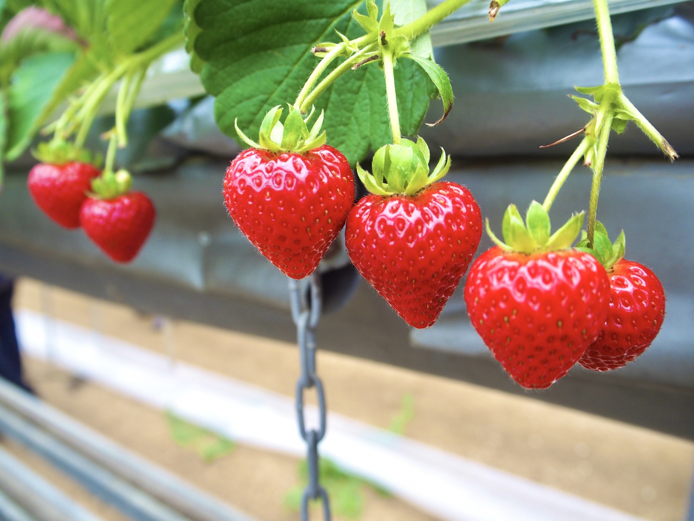
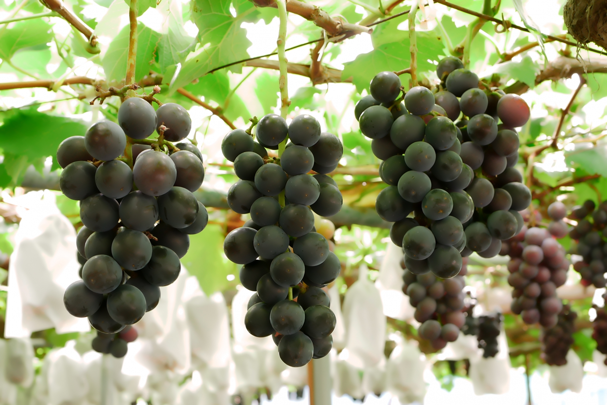
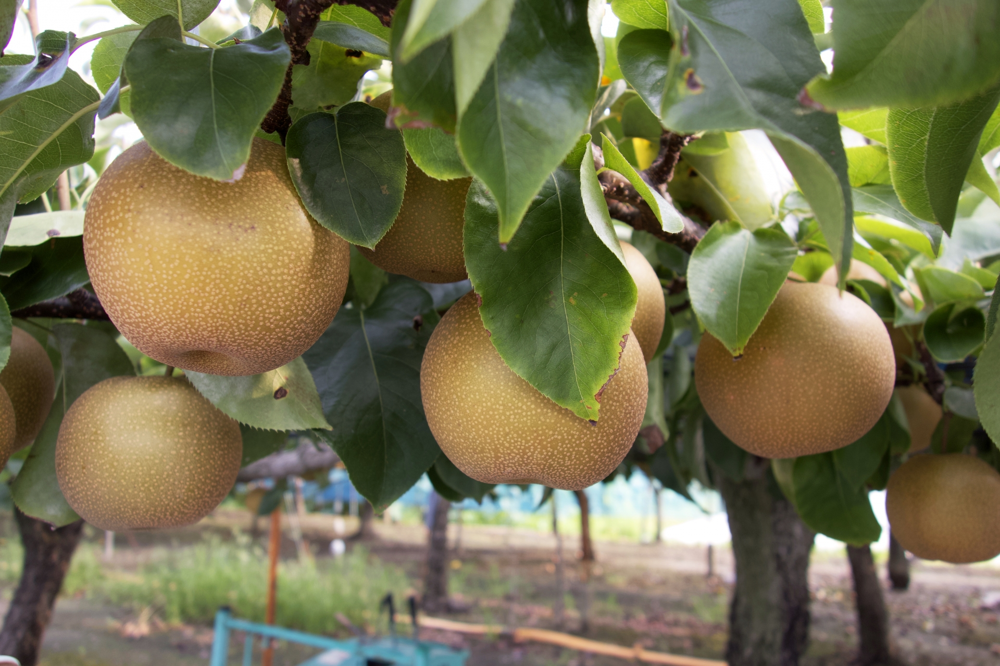
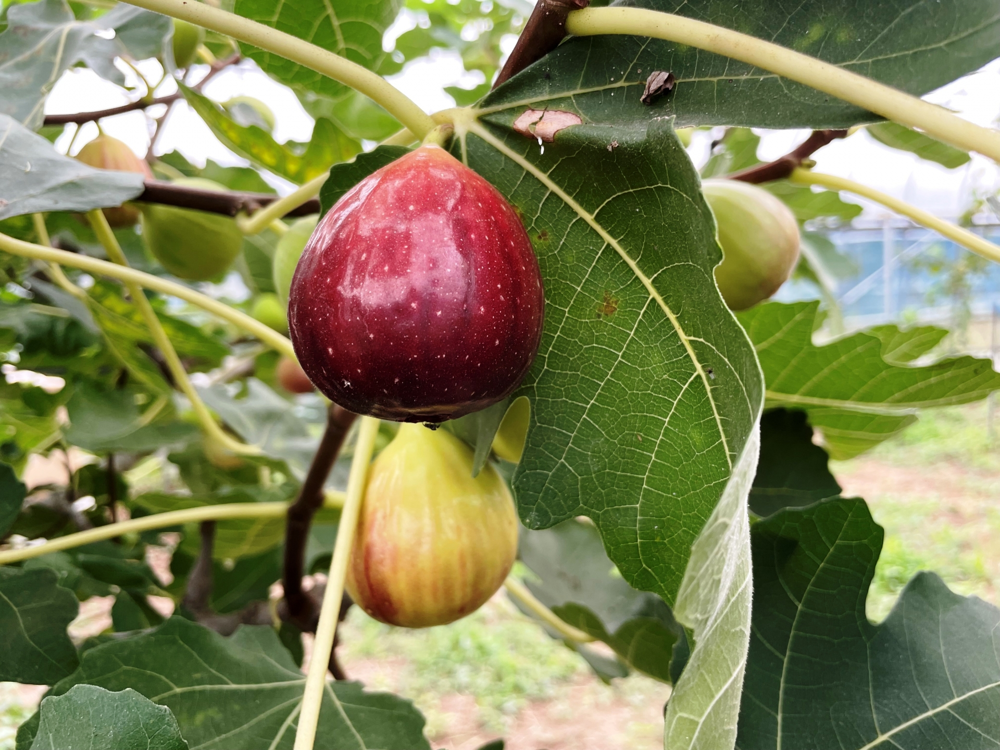

収穫物一覧
あびりん農園ではいちご・ぶどう・なし・いちじく・さつまいもの５種類を育てております。消費地に近い利点を活かし、出荷直前まで熟させることができます。
-

いちご（紅ほっぺ）
時期：１月下旬～５月上旬
「紅ほっぺ」は静岡県の登録品種のいちごです。果実はやや大きめの長円錐形で、果皮はつやのある鮮やかな紅色。香りも強く、甘味が強く酸味もやや強めで、イチゴ本来の甘酸っぱさを堪能できる品種です。
「紅ほっぺ」という名前の由来は、ほっぺが落ちるほどおいしいということからきています。
しっかり着色しており、香りがよいものを選ぶのがオススメです。
-

ぶどう（ピオーネ）
時期：８月下旬～９月下旬
ピオーネは「なにわ特産品」のひとつです。温暖な気候と独特の土質により、他産地よりも甘いと評判です。
強い甘みでありながら爽やかな酸味があり、すっきりとした味が特徴です。また、大粒なのに身が詰まり、果汁が豊富です。当農園では種なし栽培を行っており、お子様でも簡単に食べる事ができます。
鮮度の良いものは皮に白い粉が付いています。粒がふっくらとしていて、濃く色づいているものがオススメです。
-

なし（幸水）
時期：８月下旬～９月中旬
甘さの中にほどよい酸味があり、果汁も豊富です。味と質のよさから長年にわたり高い人気を得ています。
軸がしっかりとついており、果実に張りがあり固く締まっているものがオススメです。
-

いちじく（桝井ドーフィン）
時期：８月中旬～１０月初旬
「なにわ特産品」のひとつであり、大阪府のイチジク収穫量は全国でもトップクラスです。程よい甘みとさっぱりした味わいが特徴です。
丸みがあり、付け根の切り口付近まで色づいているものがオススメです。少し割れていたり、割れ欠けているものは完熟しているので食べ頃です。
-

さつまいも（紅はるか）
時期：１０月～１１月
外観が優れ、加熱した時の糖度が高いのが特徴です。貯蔵することで粘り気や甘味が増し、さらに美味しくなります。
皮がきれいな赤紫色で、全体に張りを感じるものがオススメです。